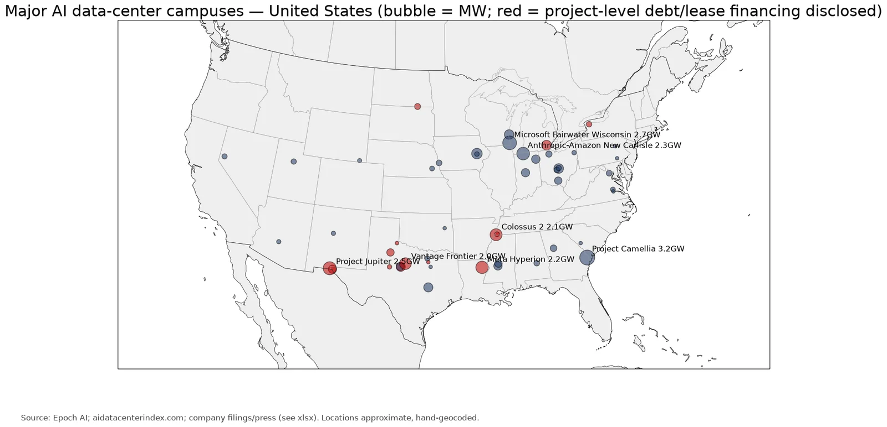
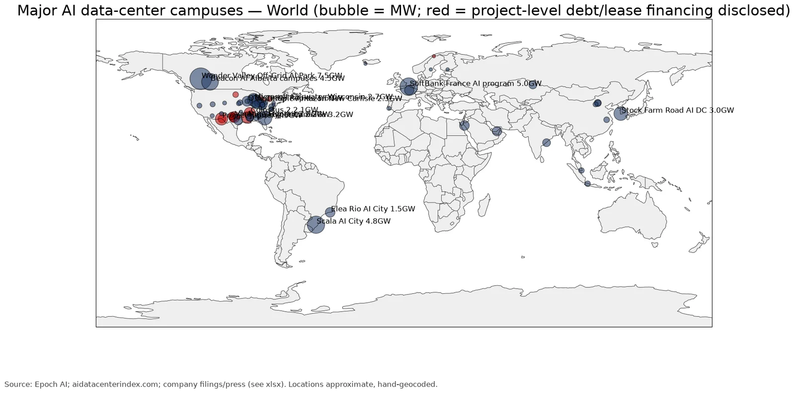

Q2. Maps

- Meta Hyperion (Louisiana) is financed through an SPV. Beignet Investor sold $27.3B of 6.581% notes due 2049, rated A+, and PIMCO took about $18B. Blue Owl owns 80% and Meta 20%. Meta leases the campus back and gives a residual value guarantee (RVG), which S&P called key to the rating. (source)
- Meta El Paso copies the structure: a $14B, 1 GW joint venture, 80% BlackRock, with about $12.5B of secured debt and an RVG of about $13B. (source)
- Oracle/OpenAI Stargate is mostly financed through partner developers. Vantage has a $38B loan, the STACK New Mexico site an $18B bank loan, and Related Michigan a $16.3B package of about $14B in 7.5% bonds plus equity. Total partner debt is about $72B. (source)
Source: Epoch AI; aidatacenterindex.com; company filings/press (see xlsx). Locations approximate, hand-geocoded.
https://epoch.ai/data/data-centers https://aidatacenterindex.com/largest/

Source: Epoch AI; aidatacenterindex.com; company filings/press (see xlsx). Locations approximate, hand-geocoded.
https://epoch.ai/data/data-centers https://aidatacenterindex.com/largest/